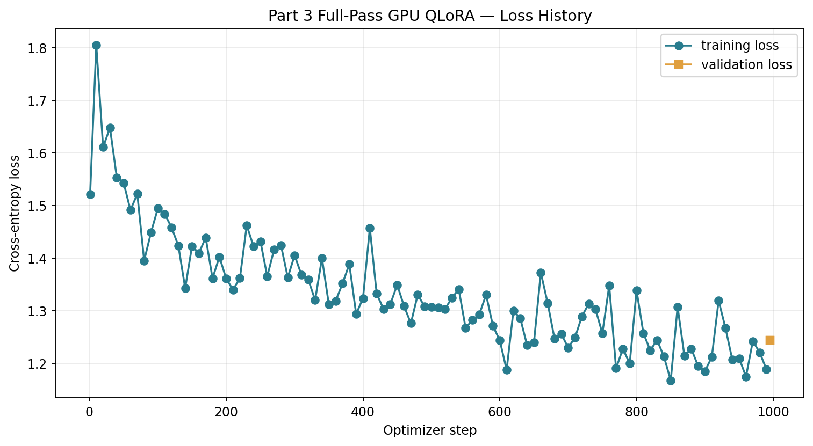
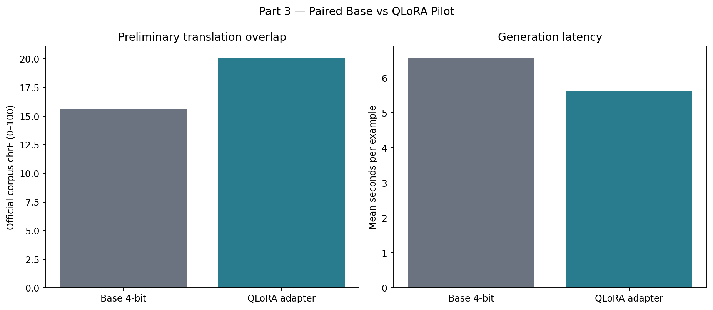
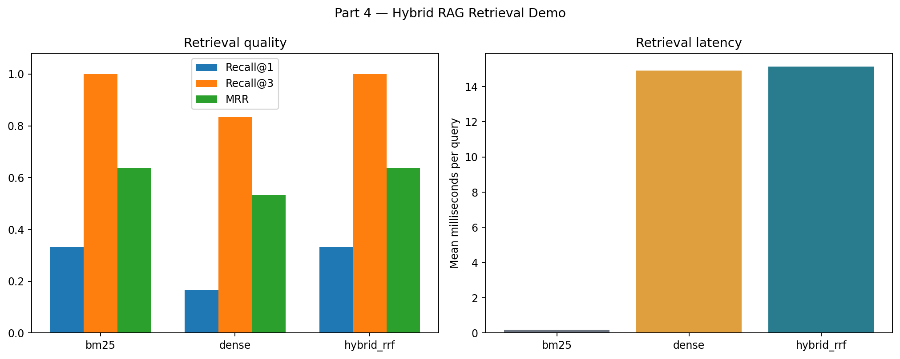
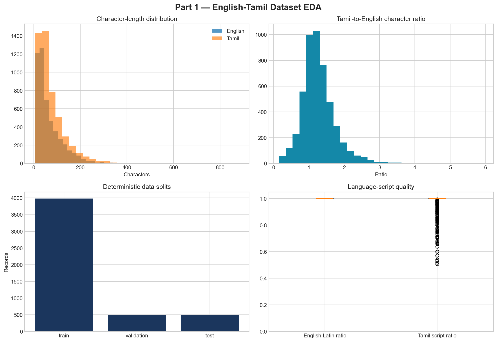
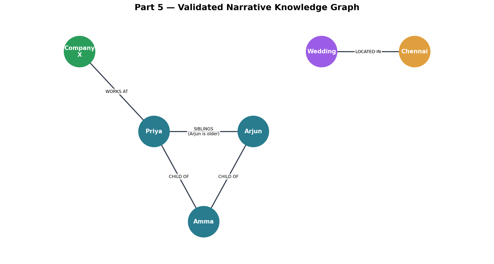
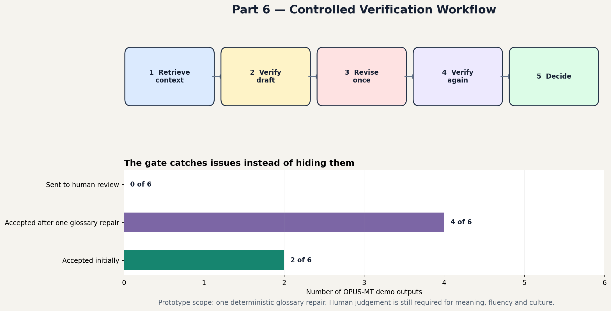

Deployed · CUDA-trained · Evidence-linked
B.Tech additional project · English → Tamil
Localization that remembers
what came before.
An end-to-end GenAI research prototype that retrieves narrative context, grounds generation in explicit entity facts, adapts a language model on a 4 GB laptop GPU, and verifies every output before acceptance.
View as
I engineered the complete system—from 5.26M-pair source processing and GPU QLoRA to hybrid RAG, graph memory, verification, API, tests and deployment.
LIVE WORKSPACE / SUBMISSION EDITION · 26 OCTOBER 2026
Try the project
Your text.
Inspectable evidence.
Search real chapters, check a Tamil draft, and export the result. Browser retrieval and verification work on this website. New model generation is available in the local CUDA demo.
EXECUTION TRACE
Ready to inspect
RETRIEVED EVIDENCE
Choose “Retrieve + verify” to rank the context collection for your input.
Passing script and glossary checks does not establish meaning or fluency. Context-enabled QLoRA consumes retrieved chunks and approved demo graph facts. OPUS-MT is source-only. Context-mode language quality remains unvalidated.
New held-out evaluation
50 unseen examples. Three systems.
Frozen by ID before generation, checked for source overlap, with official corpus chrF and a paired bootstrap interval. These results are separate from the earlier six-example demo.
Benchmark artifact loading…
01 / SYSTEM
Architecture
One traceable signal path.
Five engineering layers.
Sentence-only translation forgets characters, terminology and tone. ContextLab makes those dependencies explicit, observable and testable.
→→→→
Reproducible data engineering
Scanned four Samanantar Tamil shards, normalized Unicode, filtered script and length anomalies, deduplicated exact pairs, and froze seeded 80/10/10 splits.
753.9 MB source4,974 accepted99.48% acceptance
Parameter-efficient adaptation
Completion-only supervised tuning with a frozen quantized base and rank-8 LoRA adapters.
98.62%weights kept frozenTwo forms of grounding
Unstructured chapter context comes from hybrid retrieval; structured identity and relationship facts come from an evidence-linked graph.
14 nodes6 edges0 validation errors
Bounded verification—not an infinite agent loop
Every candidate follows a state machine: retrieve → draft → check → optionally repair approved terminology once → recheck → accept or route to a human.
RETRIEVEVERIFYREPAIR ≤1DECIDE
02 / EXPERIMENTS
Interactive research workbench
Inspect the system,
not just the headline.
Switch models, queries and examples. Every view exposes outputs, latency, evaluation boundaries and the evidence behind a decision.
2.1Completed run
CUDA-only QLoRA
A full research-edition epoch on an RTX 3050

EXECUTION MANIFEST
- Model
- Qwen2.5-0.5B-Instruct
- Quantization
- 4-bit NF4 + double quant
- Trainable
- 4,399,104 / 319,518,592
- Optimizer steps
- 995
- Training time
- 59m 35s
- Peak CUDA memory
- 2.979 GiB
- Validation loss
- 1.2441
- Coverage
- 1.00 epoch
Claim boundary“Full epoch” means all 3,980 cleaned training records in the frozen research edition—not all 5.26M public source pairs.
2.2Prototype n=6
Translation lab
Compare four systems on identical inputs
Qwen2.5-0.5B prompting + adapter research base
OPUS-MT en-dra dedicated translation comparator
EN / SOURCE
chrF-lite
Generation latency
Fβ = (1+β²)PR / (β²P+R)chrF
Character n-gram F-score. Useful for morphologically rich Tamil because partial word overlap receives credit. Here β=2 gives recall more weight.
relevant in top-k / queriesRecall@k
How often the required context appears within the first k retrieved items. Recall@3 = 1.00 means all six queries found their evidence within three results.
mean(1 / relevant rank)MRR
Rewards putting the first relevant result near the top. 1.00 is perfect; 0.64 means correct evidence is often, but not always, rank one.
2.3Runnable demo
Hybrid RAG explorer
Find the right memory among hard distractors
Ranked context
2.40 errors · 0 warnings
Knowledge-graph memory
Inspect explicit, evidence-linked story facts
CharacterEventLocationOrganization
2.56/6 accepted after ≤1 repair
Controlled verification
Every acceptance decision leaves a trace
Repairs are limited to approved glossary replacements. Fluency, semantics and cultural naturalness still require a Tamil reviewer.
STATE TRACE
03 / EVIDENCE
Generated artifacts
Results you can
open and inspect.
Each figure is generated from saved experiment output. The dashboard links back to manifests rather than relying on presentation-only claims.






Production-minded engineering
Research code with a delivery surface
The project is not a notebook-only demo. It includes typed API contracts, deterministic scripts, saved manifests, container packaging and automated tests.
FastAPIhealth · status · retrieval · graph · verifyDockerPython 3.11 image + health checkTesting72 data, ML, retrieval, graph and API testsRecoveryGitHub source + adapter + processed evidence
04 / COMPLETION
Initial plan vs current state
Software complete.
Research still honest.
All eight modules are demonstrable. The submission adds a 50-example held-out GPU benchmark, 152 real chapter chunks, a custom-input workspace and verified Docker execution. Human language review and final long-form validation remain.
Completed and demonstrable
What I can show tomorrow
- Full-source scan and frozen research dataset
- Four-system prompting/translation baseline
- Real CUDA-only QLoRA epoch and saved adapter
- BM25, dense and hybrid retrieval comparison
- Validated graph and Neo4j-ready Cypher
- Bounded verifier with evidence traces
- Component evaluation, FastAPI, Docker and deployed UI
Remaining research dependencies
What must happen next
- Native-Tamil reviewReview references and outputs for meaning, fluency, tone and cultural naturalness.
- Human long-form labelsTwelve real chapters are prepared. Paired Tamil references, semantic relevance labels and graph approvals need a reviewer.
- Stronger model benchmarkCompare Tamil-capable candidates; use external GPU compute if 4 GB VRAM is insufficient.
- Reviewed long-form evaluationThe frozen 50-example sentence benchmark is complete; human-scored long-form ablations remain.
Why this is an AI engineering portfolio project
Data. Models. Retrieval.
Evaluation. Delivery.
I owned the complete lifecycle: problem framing, dataset engineering, GPU training, retrieval and graph design, guardrails, experiment tracking, API packaging, testing and deployment.
PyTorchTransformersPEFT / QLoRACUDAHybrid RAGKnowledge GraphsEvaluationFastAPIDockerJavaScript
RESUME BULLET · VERIFIED NUMBERS
Built and deployed an 8-module English-to-Tamil GenAI localization platform that processed 5.26M source pairs, completed 995 CUDA QLoRA steps on an RTX 3050, improved official chrF by 14.75% (13.23→15.19) on 50 frozen held-out examples, achieved 100% hybrid Recall@3, raised bounded-verifier acceptance from 33.33% to 100%, and passed 72/72 tests.
New model benchmark: n=50 mined held-out references. Earlier narrative RAG/verifier comparisons: n=6. Native-Tamil review is pending.